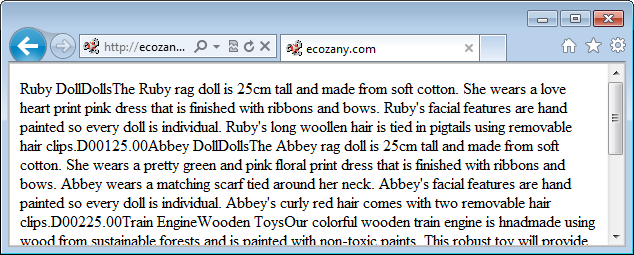
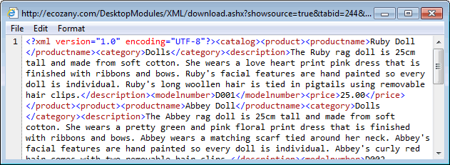

Viewing the XML Source File
How to view the XML file that is being used to perform an XML/XSL transform using the XML module. This menu option allows you to view either the data with the XML or XML source file.
- Select
 Show Source from the XML module actions menu.
Show Source from the XML module actions menu.

- This displays the data within XML file inside the current Web browser.

- Optional. To view the XML source, right click inside the web browser and then select View Source from the drop down menu. This displays the XML source file in a new web browser.
